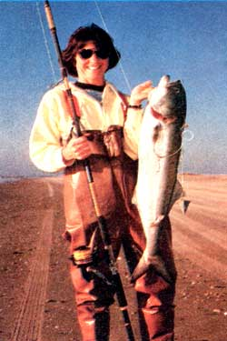

Ken Lauer says, "Your angling know-how could earn you a living!"
When Ken Lauer returned from Vietnam he had two goals in mind. The first was to get out of the city . . . and the second was to do a little fishin'. So the veteran up and moved to Buxton, North Carolina . . . a tiny village located on the narrow sand strip that makes up the state's Outer Banks.
Ken spent several years gaining an intimate knowledge of the inlets, sloughs, and "hot spots" along the 70 miles of shoreline stretching from Oregon Inlet to the southern tip of Oracoke Island. And-when he felt that he knew the area as well as anyone around-Lauer turned his piscatorial passion into a profession . . . he became a surf fishing guide.
As you might imagine, showin' folks where "the big ones" are isn't an ideal job for the security-minded. Ken notes that nearly everyone involved in the business has an outside income, usually in the form of retirement pensions or some kind of off-season labor.
"A professional guide has to depend upon the fish and the weather for his or her livelihood ... and these two factors make for a pretty chancy business."
Also, Ken feels that you must fish your area for two or three years-on an almost weekly basis-before you'll know the shore well enough to consistently produce fish for your clients. It takes that much time to learn to drive the beach . . . to "read the water" . . . to know the various depths and sloughs . . . and to "psych out" just where and when the lunkers will show up.
"And since the beach changes constantly," our fisherman-turned-guide comments, "you can never stop learning!"
While fishing is the only activity that Lauer feels he could do all the time and not get bored, he warns potential guides that such a job is hard work that often requires 10-to 14-hour days.
Getting established as a fishing expert requires some cash outlay, too. Although it's possible to save on your expenses by purchasing used equipment, guiding isn't exactly the kind of business that can be started on a frayed shoestring.
"You'll need a good new or used four-wheel-drive vehicle to transport your customers up and down the beach," Ken says, "as well as about 15 rods and reels of various sizes, an assortment of terminal gear, tackle boxes, line, and so forth . .. perhaps as much as $1,000 worth of fishin' supplies, above and beyond the cost of your auto."
It might be cheaper to make your own equipment, but our expert avoids "buildin' his own" . . . for good reasons: "Probably 70% of your customers will be inexperienced anglers, and such folks tend to tear up a lot of tackle. I'm just not the kind of guy who could put a lot of loving care into -say-a homemade rod and then sit back and watch while my handiwork was destroyed through someone else's lack of knowledge.
"You see," Ken continues, "skilled fishermen seldom need the services of a guide. Consequently, you'll have to deal mainly with beginners, family groups, and the elderly folks ... all of whom will require patience, kindness, and a good deal of encouragement.
"I've had older clients who had to do most of their fishing from a chair . . . children who dropped rods and reels in the sand ... tackle boxes broken by eager, but incompetent, fishermen ... and-in one memorable instance-I nearly lost a customer when a large fish dragged him into the water. Needless to say, patience and the ability to laugh in the face of adversity are important attributes for a fishing guide to have."
In addition, many customers are pretty particular about just what kinds of fish they catch. Some want rock bass, others are after big blues or Spanish mackerel . . . and the guide must be able to find and "entice" each species. "If the party doesn't have a preference-or doesn't know much about the sport-we just try for a little of everything," Ken explains.
Lauer also notes that your four-wheel-drive vehicle should be large enough to carry a number of people. "While you're getting established, you'll probably have to cater to low-budget groups," he says. "I charge $130 a day for a truckful of anglers. So folks with less money to spend can 'gang up' into groups of four and divide the cost among themselves. Such 'bargain fares' really will help bring in the customers you'll need to get your business off the ground!"
After 1973, it became apparent to Ken that life as a full-time guide wasn't going to produce enough income for year-round living expenses, so he began to write factual fishing articles for sports publications. The initial extra income-although small-was most welcome . . . as was the additional exposure that the published stories gave his guiding service.
But the decision to branch out wasn't prompted by simple economics alone. For a while, summer surf fishing on the Outer Banks deteriorated almost to the point of no return, and-in an effort to find sport (and customers)-Ken added small-boat fishing to his agenda (at $170 per boatful of "paying anglers") . . . and found it an interesting and profitable supplement.
Being a guide and writer also gave Mr. Lauer confidence in his ability to deal with the public, so-in the early 1970's-he began a series of outdoors-oriented radio shows for a local station.
At about the same time, Ken entered into an agreement with the Du Pont Corporation to use and promote their product called Stren, a monofilament fishing line. The deal included radio advertising and promotional appearances.
"Now," says the angling entrepreneur, "in addition to the radio shows and the writing, my January-through-March winter schedule includes a lecture tour along the eastern seaboard."
The guide service itself has also grown over the past few years. During the peak surf-fishing seasons (April/May and October/November), Ken hires as many as eight part-time assistants to handle the overflow business.
"Since I began to guide in 1968, several other aspiring hopefuls quietly entered the profession and just as quietly left it. There are still some tackle shops that offer guides as an additional service, but my organization-Outer Banks Safarisis the largest and most successful fish-findin' group around."
Though word-of-mouth may eventually bring a good guide a lot of customers, Ken thinks that-for the first two years-even the best fisherman should allocate between $500 and $700 for ads in fishing publications. "Pick one widely circulated national magazine (such as Salt Water Sportsman) that has advertising rates to fit your budget. Another good place to promote yourself and your service is in any regional fishing publication . . . these are usually weekly newspapers and are a very good source of clients."
Ken Lauer offers one final piece of advice: "Remember that it's not enough for you to be sure you're good at your trade ... you'll have to be ready to prove your ability day after day."
But if you know your particular stretch of water-be it ocean, river, or lake-like the back of your hand, and if you can fill a stringer with whoppers when the rest of the "locals" are comin' home fishless, you may just have what it takes to turn your hobby into an exciting (and profitable) occupation!
|
 |
|
|